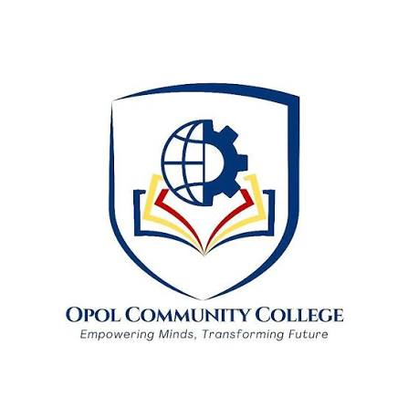

Opol Community CollegeOpol Community College (OCC) is a higher education institution located in Opol, Misamis Oriental, committed to providing quality education and developing skilled, responsible, and community-oriented graduates. It offers academic programs through its College of Business Administration, College of Information Technology, and College of Teacher Education. Beyond classroom learning, OCC promotes research, innovation, student development, and community engagement through various educational activities and partnerships. The institution also supports inclusive learning opportunities and sustainable development, helping students build practical knowledge, strengthen their abilities, and prepare for future careers. OCC strives to empower learners to become productive individuals and contributors to society.
Enroll Now →Discover the opportunities waiting for you at Opol Community College.
Discover student activities and events at OCC.
Opol Community College (OCC) is an educational institution dedicated to providing accessible and quality higher education to students in the Municipality of Opol and nearby communities. It aims to develop knowledgeable, skilled, and responsible individuals through academic programs that support their personal and professional growth. With a commitment to learning, service, and community development, OCC strives to prepare students for future career opportunities while encouraging them to become productive members of society.